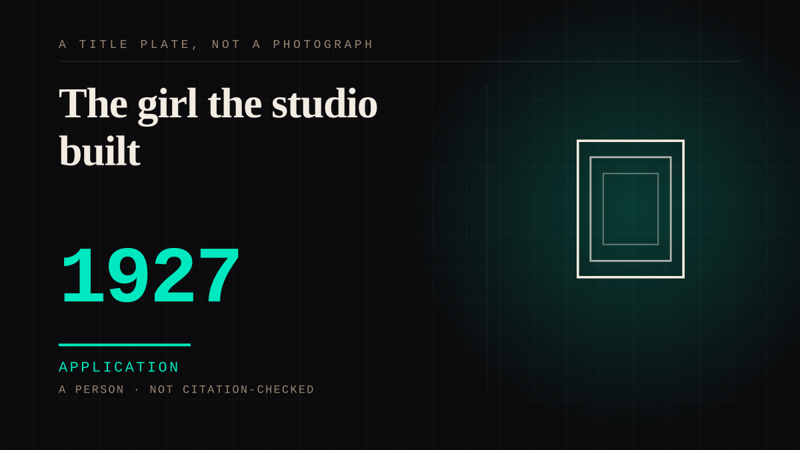

A person · 1927 · Silent era
The girl the studio built
Paramount signed Clara Bow in 1926 and released six of her pictures in 1927, one of which - It - put a novelist's definition of 'It' onto a face and left the language with the phrase 'It Girl'. At the top of her fame she was the most-answered person in America: more than 45,000 fan letters arrived in January 1929 alone, and when fans found out she used henna, sales of the dye tripled.

**A novelist defined the quality, and the studio cast a woman to hold it.** Elinor Glyn wrote both the story and the screenplay of It (1927) and gave the age its definition of the thing - 'To have It, the fortunate possessor must have that strange magnetism which attracts both sexes' - and the picture gave Bow the phrase she has been known by ever since, the It Girl. Paramount had signed her to a five-year deal on 16 August 1926, at $1,700 a week rising to $4,000 by the last year, and in 1927 alone it released six pictures with her in them, among them It and Wings. One account of her years at Paramount records her salary as the lowest of any major star, with her bonuses put in trust against the morals clause of that contract. **The reply came in at a scale the studio could count, and the audience copied her as well as writing to her.** In January 1929 - the month she began filming her first talkie - she received more than 45,000 fan letters and stood as the number one star in America, with Colleen Moore a distant second. When fans found out she put henna in her red hair, sales of the dye tripled: the audience did not only write, it reproduced the surface. Her own rise had run through a public contest - at sixteen she won Motion Picture magazine's Fame and Fortune Contest from a line of auditioning rivals - so the correspondence was part of the industry's apparatus from the start. She was named the first box-office draw in 1928 and 1929, and the second in 1927 and 1930. **The counter-argument is that she was simply the most alive person on the screen, and the record backs it.** Dorothy Arzner, who directed her in 1927, called her 'automatically a natural' and 'full of animation and projection of her thoughts and emotions', and no contract manufactures that. The claim here is narrower: what the letters were addressed to was assembled out of a novelist's definition, a five-year contract, a hair colour and a studio that kept the count - and the audience's half of it was unpaid work, writing and dyeing and copying, done at a distance the studio controlled. Whatever she was like in the room, the thing that drew more than forty-five thousand letters in one month was a surface, and surfaces are what this shelf exists to file.
Application. One-sided attachment put to work on purpose. Creator economies, community, fandom as infrastructure, and the things that genuinely help people. Not automatically good - a tool with an obvious use is a tool that will also get a bad one.
Manipulation. One-sided attachment engineered for somebody else's benefit. Paid intimacy, parasocial persuasion, sasaeng, grief extraction, the streak. The lane that pays the bills and the lane that causes the most harm, frequently at the same time.
Where it sits
1900 1900-1949 · 1927 1949
Provenance · 5 source record(s)
- unverifiedThe facts the entry rests on: the five-year Paramount deal signed 16 August 1926 at $1,700 a week rising to $4,000 by the last year; the six Paramount releases of 1927 (It, Children of Divorce, Rough House Rosie, Wings, Hula, Get Your Man); It giving her the nickname the It Girl with Elinor Glyn writing the book and the screenplay; more than 45,000 fan letters in a single month, January 1929; the first box-office draw of 1928 and 1929 and the second of 1927 and 1930; and henna sales tripling when fans learned she used it. Read through a search index rather than fetched, so the record is unverified: a reader can open this page, this agent did not.Wikipedia, "Clara Bow" ↗
- unverifiedThe scale of the reply as PBS records it: by 1929 she was receiving 45,000 fan letters a month, and that same year sales of the reddish dye henna tripled as fans tried to mimic her look; plus the 1927 star turn in It. Read through a search index rather than fetched, so the record is unverified: a reader can open this page, this agent did not.PBS NewsHour, "Who is Clara Bow from Taylor Swift's new album?" (2024) ↗
- unverifiedThe origin of the phrase and its definition: Bow as the world's first It girl after the 1927 film It, Elinor Glyn's written definition of It as a strange magnetism which attracts both sexes, the box-office ranking of 1928 and 1929 against 1927 and 1930, and 45,000 fan letters in a single month at the height of her fame. Read through a search index rather than fetched, so the record is unverified: a reader can open this page, this agent did not.Vogue, "Happy Birthday, Clara Bow! Here, a Look back at the Original It Girl" (L. Yaeger, 2017) ↗
- unverifiedThe studio side of the record: January 1929 as the month she began filming her first talkie, her standing as the number one star in America with 45,000 fan letters and Colleen Moore a distant second, the studio exploiting her fame, her salary as the lowest of any major star with bonuses held in trust against the morals clause, her win at sixteen in Motion Picture magazine's Fame and Fortune Contest, and Dorothy Arzner's on-set assessment of her as a natural full of animation and projection of her thoughts and emotions. Read through a search index rather than fetched, so the record is unverified: a reader can open this page, this agent did not.Moviediva, "The Wild Party" (2022) ↗
- unverifiedIndependent corroboration of the month: 45,000 fan letters in January of 1929, with Glyn's It Girl declaration and Bow's standing alongside Garbo, Gish, Pickford and Swanson. Read through a search index rather than fetched, so the record is unverified: a reader can open this page, this agent did not.American Heritage, "The It Girl" (1995, Vol. 46 Issue 4) ↗
Not yet stood behind. The entry is real. A person has not read the citation and confirmed it, so treat the date as approximate until they do.
Connected · 3 out, 1 in
It sits in
The full timeline → · The database → · See it in the atlas →